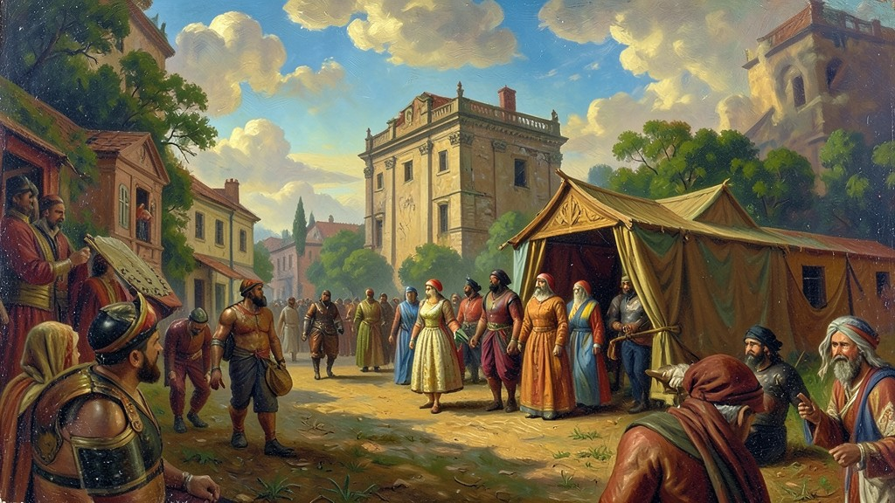
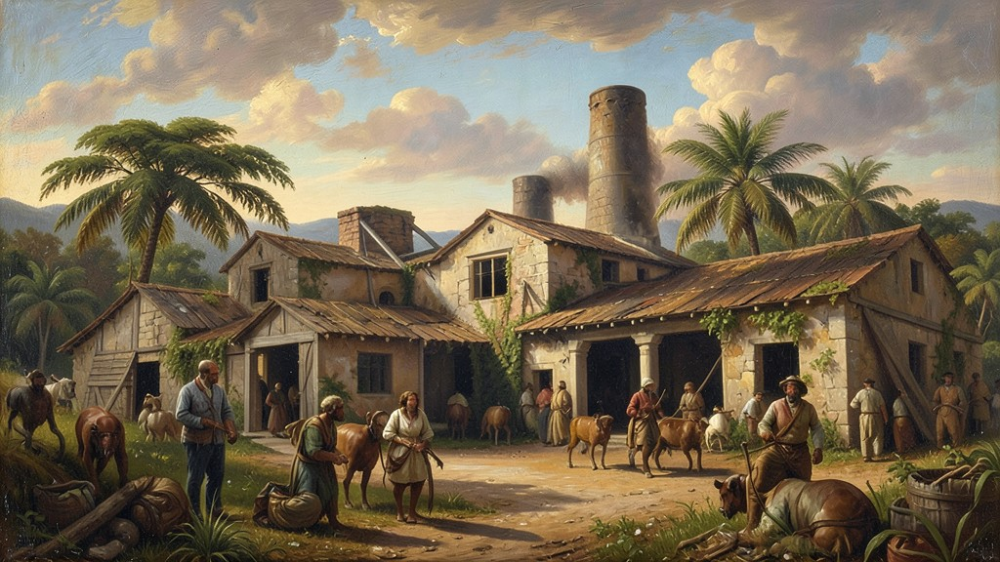
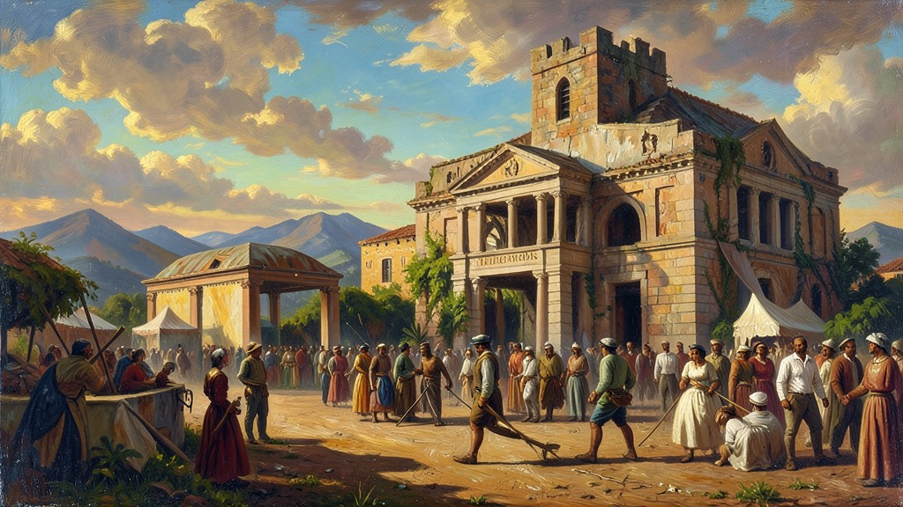

"A colonização do Brasil não foi um evento isolado, mas parte da expansão ultramarina europeia e da montagem do Antigo Sistema Colonial. Estude aqui as complexas relações entre Metrópole e Colônia, a lógica do mercantilismo e as formas de resistência escrava."
A fundação do Brasil como colônia (1530-1808) insere-se no contexto do Mercantilismo, sistema econômico que buscava o acúmulo de metais preciosos e a balança comercial favorável. O Brasil foi concebido como uma 'colônia de exploração', regida pelo Exclusivo Metropolitano (Pacto Colonial), onde a produção visava exclusivamente o abastecimento do mercado europeu. A base dessa economia era a **Plantation**: o latifúndio monocultor agroexportador, sustentado pelo trabalho compulsório. No início, houve a tentativa de escravização indígena (guerra justa), mas a Igreja e a Coroa, por motivos distintos (catequese e impostos sobre o tráfico negreiro), acabaram por priorizar o tráfico transatlântico de africanos, que se tornou a atividade comercial mais lucrativa do império português. No âmbito administrativo, a descentralização inicial das Capitanias Hereditárias (1534) revelou-se ineficaz para gerir um território continental, levando à criação do Governo Geral em 1548. Com ele, surgiram os cargos de Ouvidor-mor (justiça), Provedor-mor (fazenda) e Capitão-mor (defesa). Nas vilas, o poder real era exercido pelos 'Homens Bons' através das Câmaras Municipais, perpetuando o poder da aristocracia rural brasileira, o que gerava frequentes tensões com os 'Mascates' (comerciantes portugueses). A transição do século XVII para o XVIII marca o deslocamento do eixo econômico do Nordeste açucareiro para o Centro-Sul minerador. A descoberta de metais preciosos trouxe uma nova dinâmica social: a urbanização, o surgimento de uma pequena classe média de profissionais liberais e artesãos, e o arrocho fiscal da Coroa (o Quinto e a temida Derrama). Esse novo cenário urbano e intelectual, influenciado pelas Luzes (Iluminismo), foi o terreno fértil para as revoltas emancipacionistas que começariam a questionar a lógica colonial no final do setecentos.
1. O Sistema de Capitanias e a Centralização Administrativa
A divisão em Capitanias Hereditárias foi a primeira tentativa de Portugal de terceirizar os custos da colonização para a nobreza. Contudo, a falta de recursos, a distância da metrópole e a resistência indígena feroz (como nas Confederações dos Tamoios) levaram o sistema ao colapso, restando apenas Pernambuco e São Vicente como centros de lucro. Em 1548, Tomé de Souza chega como primeiro Governador Geral, trazendo os jesuítas. O Estado colonial passa a ter um centro (Salvador) e a organizar a defesa do território contra invasões francesas e holandesas.

2. Economia Açucareira: A Fábrica no Campo
O engenho era o coração da colônia. Era mais que uma fazenda; era um complexo industrial, social e político. A produção dependia do capital holandês para financiamento e refino, e do braço africano para o trabalho bruto. A estrutura social era piramidal e rígida: no topo, o Senhor de Engenho; abaixo, os homens livres pobres; e na base, os escravizados malnutridos e explorados. Gilberto Freyre e outros historiadores debatem o conceito de 'Sociedade Patriarcal', onde o poder emanava da Casa-Grande, controlando inclusive o espaço público através das ordens religiosas.

3. O Ciclo do Ouro e a Reforma de Pombal
A extração do ouro no século XVIII transformou o Brasil. Pela primeira vez, houve um mercado interno significativo de gado, alimentos e tecidos para abastecer as Minas Gerais. A Coroa Portuguesa, sob a gestão do Marquês de Pombal, intensificou a fiscalização, criando as Casas de Fundição para evitar o contrabando de 'ouro em pó'. Pombal também expulsou os jesuítas, buscando secularizar a educação e otimizar a arrecadação. Esse período viu o nascimento do Barroco Mineiro, uma expressão artística de opulência e religiosidade financiada pela riqueza mineradora, personificada por Aleijadinho.

4. Escravidão, Corpos e Almas
O tráfico negreiro não foi apenas uma necessidade laboral, foi o motor do Império Português. Milhões de africanos de diferentes etnias (Bantos, Iorubás) foram trazidos à força. Na colônia, a reificação do ser humano era o padrão, mas as brechas jurídicas (como a alforria) e as festandanças religiosas permitiam a sobrevivência de tradições. A resistência não era apenas o Quilombo; era o sincretismo religioso, o aborto como protesto, a quebra de ferramentas e o lento caminhar no trabalho. O Quilombo de Palmares, o 'Estado dentro do Estado', durou quase um século, desafiando a lógica de que o escravizado era desmunido de organização política.
5. Revoltas Emancipacionistas: O Grito da Independência
No final do século XVIII, o descontentamento com o Pacto Colonial explodiu. Inspirada pela independência dos EUA, a Inconfidência Mineira (1789) foi um movimento de elite contra a tributação (Derrama). Já a Conjuração Baiana (1798), influenciada pela Revolução Francesa e pela Independência do Haiti, teve caráter popular, pedindo a abolição da escravidão e igualdade racial. Ambos os movimentos foram duramente reprimidos, mas expuseram que o domínio português era uma contagem regressiva.
TEXTO DE APOIO
A formação do Brasil colonial estruturou-se sob a lógica do Sistema Colonial Mercantilista, que concebia a colônia estritamente como um apêndice comercial destinado a enriquecer a metrópole. Caio Prado Júnior argumenta que o Brasil não nasceu de um projeto civilizatório, mas de um empreendimento de exploração voltado para o mercado externo europeu.
O tripé plantation (latifúndio, monocultura e escravidão) definiu a estrutura social, econômica e demográfica do território. A necessidade de garantir o lucro contínuo consolidou a escravidão transatlântica como a instituição basilar da sociedade, engendrando um modelo de estratificação social profundamente desigual e excludente.
Em provas como o Enem, enfatiza-se como o pacto colonial restringia a acumulação de riquezas internamente. A exclusividade de comércio e a ausência de indústrias locais criaram uma dependência estrutural que, de muitas formas, sobreviveu à própria independência política, reverberando nas vulnerabilidades econômicas contemporâneas.
Mini Games
Arcade Histórico
Escolha um dos jogos abaixo para fixar o aprendizado deste módulo: